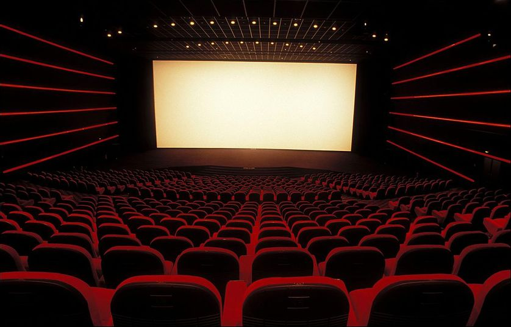

Hello, I'm Tessa
-
18 ans
-
IESEG School of Management
-
Chelles 77500
-
Gymnastique
-
Animal lover
Description
My name is Tessa Bouttier, I am a first year student at IESEG School of Management and I am passionate about travels, sports and cinema. These are areas in which I would love to have links with, as I want to be a marketing director.
Travels
Cinema
Sports
Travels
I have always been passionate about travelling, I love discovering new cultures, meet new people and learn about these experiences. It is a beautiful thing to see yourself growing through this. Travels is one of the best way to open yourself to the world, you see things that you will never forget and remains in memory. It is also a way to take a step back, think and relax. You discover what you like and what you do not like, what you want and what are your goals in life.
Cinema
Cinema is a field that has always interested me. I love all genres of films, I think it is a great thing to improve your culture and you never get rid of watch movies that interests you. It is a way to escape from your daily life and to get into someone's world, I really like the fantasy side. However, I also like to watch movies or series that traces real stories. Furthermore, there is a wide variety of choices so we usually find people who like to watch the same things as you.
Sports
Sport is a whole part of my life, I have always been involved in sports since I was a child, whether it was swimming, dancing, horseback riding or gymnastics, I have always loved it. I found my passion in gymnastics, so I continued this sport for 8 and a half years. I have made several competitions, in team and individual, which brought me team spirit, support and determination. Finally, I met some great people, who are now among my best friends!